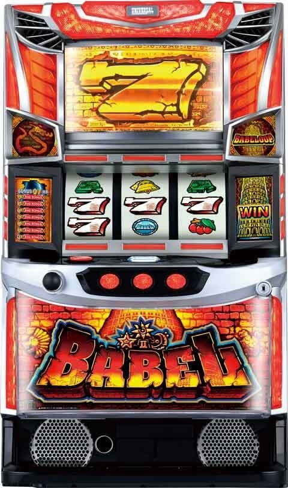
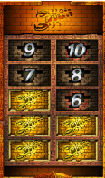
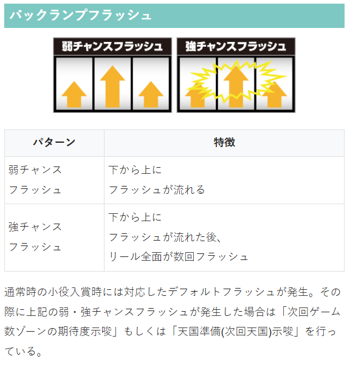
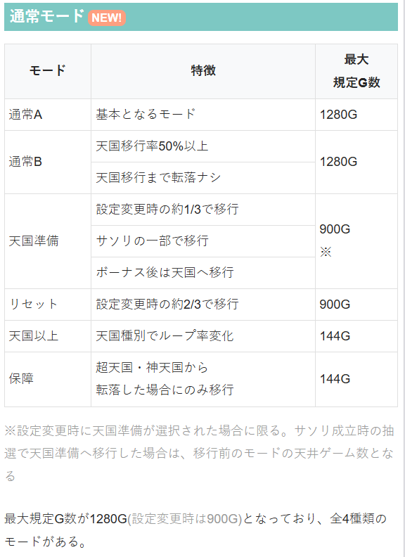
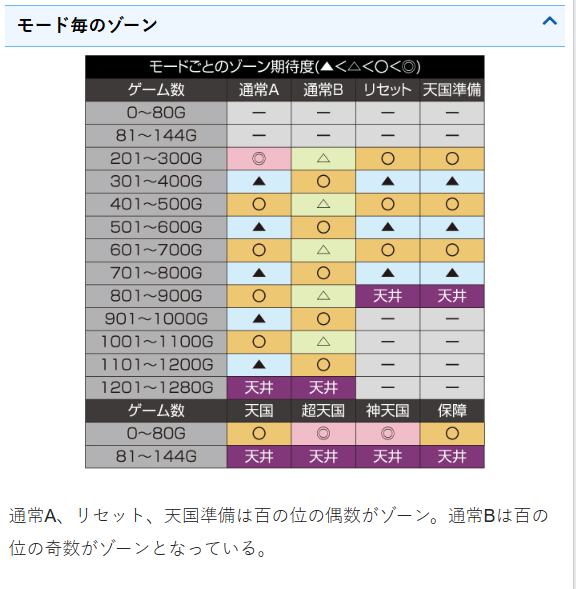
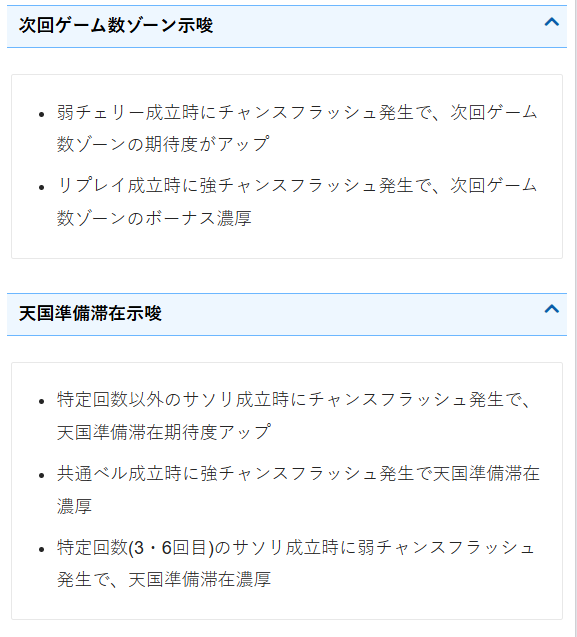

バベル

【天井情報】
最大1280Gで天井到達となりボーナスに当選。
設定変更時は900Gに短縮。
サソリ回数天井 10回目
【リセット判別】
不明
【有利区間について】
不明
設置台数が少ないため、暫くは狙い目が不安定になりそうです。
前回当選履歴からモード推測出来るか不明なため、現状は液晶情報から見れるサソリ回数でボーダー調整する感じです。
狙い目
【リセット狙い】
180Gから
【ゲーム数天井狙い】
サソリ回数が少ない場合（例えば4回以下くらい）の狙い目です。
0スルー 750G から
1スルー以降 580Gから
※天井が深いため、サソリ回数でボーダー調整が必要になりそう
※前回当選G数が、350.550.750前後の場合（通常Bの可能性考慮）はボーダー下げる様な感じになるかも？
※通常Bへ移行すると天国までモード転落しないため天国スルー重ねるほどボーダー下げれる？
※天国0スルー、または1.2スルーで履歴上250.450.650前後でのみ当選してる様だとボーダー上げる感じ？
【サソリ回数別狙い】
0-4回 天井狙いボーダー通り
5.6回 100Gボーダー下げる
7回以上 当選まで
以下の様にサブ液晶から成立回数確認可能。

【バックランプフラッシュでのモード示唆狙い】
以下の天国準備滞在濃厚は当選まで。期待度アップは大きめにボーダー下げる感じ？
・特定回数以外のサソリ成立時にチャンスフラッシュ発生で、天国準備滞在期待度アップ
・特定回数(3・6回目)のサソリ成立時に弱チャンスフラッシュ発生で、天国準備滞在濃厚
・共通ベル成立時に強チャンスフラッシュ発生で天国準備滞在濃厚

【ゾーン狙い】
200-250ゾーン狙い
180Gから
400-450ゾーン狙い
430Gから
600-650ゾーン狙い
580Gから
※前兆でのモード判別の有無は不明だが、600-650ゾーン狙いをして600Gを踏んでも夕方ステージに行かないなど600-650で前兆の挙動が無い場合はモードB想定でそのまま当選まで打ち切るといった立ち回りが出来るかも？
【有利区間関連狙い】
不明
やめ時
ボーナス後に天国モード天井の液晶144Gヤメ。
※144G手前で前兆抜けから144Gで当選するケースあり。
※前兆抜け後の144G手前の台を積極的に打つほどでは無さそうだが、自身が打っていた場合は念のため144Gまで回すのが無難そう。
RB当選時点で天国以上滞在。
その他



参考元
基本情報
- メーカー: ユニバーサルブロス
- 機械割: 97.4% 〜 110.0%
- 導入開始日: 2025年10月06日（月）
- ゲーム性概要: ●名機『バベル』がスマスロで復活！ ●スペックはモード管理型のAT機 ●4号機でおなじみのBET→0G連も健在 ●通常時は規定ゲーム数消化とレア役でボーナスを抽選 ●天国モード以上移行でボーナスが77%超でループ ●超天国or神天国移行でBABELOOP発動 ●神天国はループ率91%でTY3500枚オーバー！


打ち方
打ち方・小役
打ち方（小役狙い）
［最初に狙う絵柄］ 左リール上段付近にチェリー付きの白7or赤7を目押し。
［サソリ停止時は中リールを目押し］ 中リールは青7目安で目押しすればOK。その他の停止形は中＆右リールフリー打ちで消化しよう。
［レア役の停止例］ 強チェリー成立時は約20%でボーナスに当選する。
変則押しはNG
ナビなし時は基本的に左1stでの消化を推奨だ。
ボーナス中の技術介入
上画像のような2連白7が表示されるナビ発生時（必ず予告音も連動）は、押し順に従いつつ左リールに2連白7を目押し。 4コマ引き込むので、ある程度アバウトに狙っても大丈夫だ。 成功すればベルナビ回数を1回分上乗せ。失敗した場合、払い出しは受けられるがナビは上乗せされない。
リーチ目／出目法則
リーチ目例（擬似遊技中）
［擬似遊技中にのみ出現］ リーチ目は擬似遊技でのみ出現するので専用のフラグがあるわけではなく、本前兆の擬似遊技で必ず出現するわけでもない。 左リールの狙う位置によって特徴があり、2連白7や青7付近はスベリが重要、赤7付近はリーチ目が出やすいなど、様々な特徴がある。 次回天国以上濃厚となるリーチ目も存在している。
上記は4号機の『バベル』でもお馴染みだったリーチ目だ。
解析情報通常時
小役関連
小役確率
| 役 | 確率 |
|---|---|
| リプレイ | 1/7.3 |
| 共通ベル | 1/10.0 |
| サソリ | 1/128.0 |
| 弱チェリー | 1/64.0 |
| 強チェリー | 1/585.1 |
小役確率は全設定共通。
小役入賞時のフラッシュ
小役入賞時に発生するフラッシュで次回のゾーン期待度や天国準備滞在を示唆している。
フラッシュのパターン別法則
| パターン | 法則 |
|---|---|
| 弱チェリー時の チャンスフラッシュ | 次回ゲーム数ゾーンの期待度アップ |
| リプレイ時の 強チャンスフラッシュ | 次回ゲーム数ゾーンで ボーナス濃厚 |
| 3・6・10回目以外のサソリで チャンスフラッシュ | 天国準備滞在の期待度アップ |
| 共通ベル時の 強チャンスフラッシュ | 天国準備滞在濃厚 |
| 3・6回目のサソリで 弱チャンスフラッシュ | 天国準備滞在濃厚 |
※とくに記載のないチャンスフラッシュは弱・強共通
［弱チャンスフラッシュ］ 下から上にフラッシュが流れる。
［強チャンスフラッシュ］ 下から上にフラッシュが流れた後、リール全面が複数回フラッシュする。
モード
通常モード
| モード | 特徴 |
|---|---|
| 通常A | ● デフォルトのモード ● 百の位［偶数］のゾーンがチャンス |
| 通常B | ● 百の位［奇数］のゾーンがチャンス ● 天国モード移行期待度約50% ● 天国以上へ行くまで通常Aへ転落しない |
| 天国準備 | ● 設定変更時の約1/3で移行 ● 百の位［偶数］のゾーンがチャンス ● ボーナス当選で天国以上へ移行 ● サソリ成立時に移行する場合もあり |
| リセット | ● 設定変更時の約2/3で移行 ● 百の位［偶数］のゾーンがチャンス |
8種類のモードで規定ゲーム数（ボーナス抽選）を管理。基本的な移行契機はボーナス当選だが、サソリ成立時に天国準備モードへ昇格することがある。 最大天井は1280G（設定変更後は900G）、設定変更後は天国準備orリセットモードへ移行する。天国準備の天井は移行前のモードを引き継ぐ（設定変更後は900G）。
通常モードごとのボーナス当選分布
| ゲーム数 | 通常A | 通常B | リセット | 天国準備 |
|---|---|---|---|---|
| 0～80G | 一 | 一 | 一 | 一 |
| 81～144G | 一 | 一 | 一 | 一 |
| 201～300G | ◎ | △ | ◯ | ◯ |
| 301～400G | ▲ | ◯ | ▲ | ▲ |
| 401～500G | ◯ | △ | ◯ | ◯ |
| 501～600G | ▲ | ◯ | ▲ | ▲ |
| 601～700G | ◯ | △ | ◯ | ◯ |
| 701～800G | ▲ | ◯ | ▲ | ▲ |
| 801～900G | ◯ | △ | 天井 | 天井 |
| 901～1000G | ▲ | ◯ | 一 | 一 |
| 1001～1100G | ◯ | △ | 一 | 一 |
| 1101～1200G | ▲ | ◯ | 一 | 一 |
| 1201～1280G | 天井 | 天井 | 一 | 一 |
通常A・Bの注目ポイントまとめ
| モード | 注目ポイント |
|---|---|
| 通常A | ● 200G台の当選率が約33～39%と高い ● 500G以内の当選率は約50～60% ● 高設定ほど200・400・600Gの選択率が高い |
| 通常B | ● 600G以内の当選率は約40% |
200G台の当選率が比較的に高いため、144G抜けの台を狙うのもありだ。
ボーナス連モードはコチラ
設定変更時のモード移行率
| 移行モード | 移行率 |
|---|---|
| リセット | 65.2% |
| 天国準備 | 31.6% |
| 天国 | 2.3% |
| 超天国 | 0.4% |
| 神天国 | 0.4% |
設定変更後は通常A・Bへ移行する可能性はなく、リセットor天国準備以上へ移行。 いきなり天国以上へ移行する可能性もある。
特定モード滞在中の通常B移行率
リセットモード、各種ボーナス連モード終了後は高設定ほど通常Bへ移行しやすい。
サソリ成立回数ごとの天国準備移行期待度 （理論値）
サソリ成立時はサソリポイント＆ボーナス抽選だけでなく、天国準備への移行を抽選する。
ボーナス当選率
レア役成立時のボーナス当選率
| 設定 | 弱チェリー | 強チェリー | サソリ 3・6回目 | サソリ 10回目 | サソリ 左記以外 |
|---|---|---|---|---|---|
| 1 | 0.4% | 20.3% | 12.5% | 100% | 0.4% |
| 2 | 0.4% | 21.9% | 13.3% | 100% | 0.4% |
| 3 | 0.8% | 23.4% | 14.1% | 100% | 0.4% |
| 4 | 1.2% | 25.0% | 14.8% | 100% | 0.4% |
| 5 | 1.6% | 27.3% | 16.8% | 100% | 0.4% |
| 6 | 2.0% | 28.9% | 18.8% | 100% | 0.4% |
基本的にボーナス当選率は高設定ほど優遇。 とくに弱チェリー契機の設定差が大きくなっている。
サソリポイント
サソリポイント概要
サソリの規定回数でもボーナスが抽選され、 3回・6回目はチャンス、10回目はボーナス濃厚 （成立回数は上画像のようにサブ液晶に表示）。 サソリ成立時は、同時に天国準備モード移行も抽選される。
［サソリの回数に注目］ サソリの規定回数狙いは天国準備滞在にも期待できる（天国準備中のボーナスは天国以上濃厚）。
サソリ回数別のボーナス当選率
| 設定 | 3・6回目 | 10回目 | 左記以外 |
|---|---|---|---|
| 1 | 12.5% | 100% | 0.4% |
| 2 | 13.3% | 100% | 0.4% |
| 3 | 14.1% | 100% | 0.4% |
| 4 | 14.8% | 100% | 0.4% |
| 5 | 16.8% | 100% | 0.4% |
| 6 | 18.8% | 100% | 0.4% |
3回目と6回目は高設定ほどボーナスに当選しやすい。
4thリールステージ/夜ステージ
4thリール＆夜ステージ概要
［4thリールステージ］ ボーナス期待度約40%の前兆ステージで、4thリールの回転方向や停止パターンで期待度や成立役を示唆。 滞在中は擬似遊技も発生して、リーチ目が停止する可能性がある（ガセの擬似遊技もあり）。
4thリールステージ性能
| 項目 | 内容 |
|---|---|
| 移行契機 | 規定ゲーム数消化時、レア役後 |
| ボーナス期待度 | 約40% |
| その他 | 4thリールステージではなく 夜ステージへ移行した場合はボーナス濃厚 |
4thパネルの示唆
| パネル | 示唆など |
|---|---|
| 穴 | ハズレ対応 |
| 亀 | 全役対応（ハズレ含む） |
| ライオン | 小役対応かつ本前兆中は出現率アップ |
| 紋章 | 停止するほど本前兆期待度アップ、 3連続で出現すればボーナス濃厚 |
| 回転方向 | 左方向がデフォルト、右方向なら擬似遊技濃厚 |
| エフェクト | 炎はチャンス、雷は大チャンス |
| 擬似遊技中の リーチ目出現期待度 | 亀＜穴＜紋章＜ライオン |
［4thリールパネル］
［エフェクト］ 炎と雷がある。
［7停止でボーナス］
［夜ステージ］ 夜ステージはボーナス本前兆濃厚だ。
フリーズ
ロングフリーズ
実戦ではボーナス確定画面からのフリーズパターンを確認。発生時は超天国モード以上濃厚＋αの恩恵あり!?
ロングフリーズ動画
BIG＋バベループ（ループ率85%or91%）突入濃厚。実戦上はボーナス確定画面から発生していた。
解析情報ボーナス時
ボーナス
ボーナス概要
初当り時は必ずBIGからスタート。終了後はボーナス連モード（144G以内）による連チャンに期待できる。 REG当選時はモード転落がなく、当選＝天国モード以上濃厚（初当り含めBIG2回以上が確約）、さらに 約1/8で超天国or神天国モード（バベループ）に突入 する。
ボーナス性能
| 項目 | 内容 |
|---|---|
| 当選区間 | BIGは通常時・ボーナス連モード中、 REGはボーナス連モード中のみ当選 |
| 純増 | 約6.0枚/G |
| 獲得枚数 | BIG：約420枚（ベルナビ50回＋α）、 REG：約125枚（ベルナビ15回＋α） |
| 消化中の抽選 | 2連白7ナビの技術介入成功でベルナビを上乗せ、 強チェリー成立時にBIG0G連を抽選など |
| その他 | 当選時はモード移行抽選、 REG後は 天国以上かつ約1/8で超天国以上 へ、 ボーナス後のBETで発動する0G連も健在 |
［技術介入でベルナビを上乗せ］ 予告音発生時に上記のような2連白7を狙うナビが発生したら、押し順通りに止めて左リールに2連白7を目押し。成功すればベルナビ1回が上乗せされる。4コマまで引き込んでくれるので、目押し難易度は低めだ。
［強チェリーはBIG0G連を抽選］ 予告音発生＋ナビなし時はチェリー成立のチャンス。強チェリーならBIG0G連ストックに期待できる。
［BIG0G連の連打もあり］ 終了後BET時（規定ゲーム数）、ボーナス中の強チェリー契機という2種類の0G連が存在する。
［規定ゲーム数契機の0G連］
［強チェリー契機の0G連］
ボーナス連モード
ボーナス連モード
| モード | 特徴 |
|---|---|
| 保障 | ● 超天国or神天国終了後に移行 ● 基本的にはボーナス後に通常モードへ |
| 天国 | ● ループ率：77% ● 平均期待枚数：約1430枚 |
| 超天国 | ● ループ率：85% ● 平均期待枚数：約2800枚 |
| 神天国 | ● ループ率：91% ● 平均期待枚数：約3500枚 |
※すべて144G（REGは80G以内に当選）以内の引き戻し濃厚
ボーナスを契機に移行するモードで、144G以内の引き戻し濃厚。モードによってループ率が変化する。 REG後は天国以上濃厚かつ約1/8で超天国以上へ移行。当選するボーナスがREGの場合は80G以内に告知される。
ボーナス連モードごとのボーナス当選分布
| ゲーム数 | 保障 | 天国 | 超天国 | 神天国 |
|---|---|---|---|---|
| 0～80G | ◯ | ◯ | ◎ | ◎ |
| 81～144G | 天井 | 天井 | 天井 | 天井 |
［規定ゲーム数が長いほどモード継続の期待度アップ］ 天国以上滞在時の規定ゲーム数は、長い（深い）ほどボーナス連モードの継続期待度がアップ。 持ち玉が減る分、連チャンしやすい仕組みになっている。
天国の注目ポイントまとめ
| モード | 注目ポイント |
|---|---|
| 天国 | ● BIG時の選択率は80G以内が 65% ● REG時は20G以内の選択率が 約33% |
| 超天国 | ● BIG時の選択率は80G以内が 75% 、0G連は 5% ● REG時は20G以内の選択率が 約66% |
| 神天国 | ● BIG時の選択率は80G以内が 90% 、0G連は 10% ● REG時は20G以内の選択率が 約80% |
都市伝説モード
都市伝説モード詳細
ボーナス中の強チェリーやボーナス終了後の告知で0G連が発生した場合は、設定に応じて0G連が85.2%でループする都市伝説モードへの移行を抽選。期待枚数は3000枚以上と超強力だ。
都市伝説モード性能
| 項目 | 内容 |
|---|---|
| 移行契機 | 0G連当選時の一部 |
| 恩恵 | 0G連が85.2%でループ |
| 期待枚数 | 3000枚以上 |
演出情報
通常時
通常時の演出解説
| 演出 | ポイント |
|---|---|
| 塔回転演出 期待度：☆ | ● 塔が回転した後のアイテムで小役や前兆を示唆 ● ライオン像は色で小役を告知 ● 回転方向や告知タイミングで期待度変化 |
| 鐘台演出 期待度：☆ | ● 塔の左右にある鐘の色で小役を告知 ● 鐘がアップ（正面向き）になると期待度アップ |
| シャッター 煽り演出 期待度：☆ | ● 4thリールステージ移行を示唆 ● 第2停止まで続くパターンが多いと移行のチャンス ● 第3停止まで続けば4thリールステージ移行 ● 第3停止のいきなりシャッター閉鎖は本前兆期待度アップ |
| 扉昇格演出 期待度：☆ | ● 発展を告知する演出 ● 上の階に行くほどチャンス（扉の色は青＜赤） ● 発展告知の中で最も期待できる |
| 通路演出 期待度：★☆ | ● 塔の内部通路にある松明の色で小役を示唆 ● 炎の数が多い（通路の先まで点灯する）ほどチャンス ● 第1停止時以外で色系の告知が出ると 大チャンス |
| エフェクト演出 期待度：★★ | ● 画面左右のシャッター部分のエフェクトでレア役を示唆 ● エフェクトが発生した時点で小役以上濃厚 ● エフェクト期待度は波紋＜炎＜雷（雷はレア役濃厚） |
| つむじ風演出 期待度：★★ | ● つむじ風が吹いて飛来してくる石板の色で小役を示唆 ● 共通ベルやサソリ成立時に発生しやすい ● 弱チェリーだった場合は 大チャンス |
| マーメイド像演出 期待度：★★ | ● レア役濃厚かつマーメイド像の持つ壺の色で成立役示唆 ● 壺のサイズが大きければチャンス ● 第3停止以外で色系告知が出れば 大チャンス |
| 流星演出 期待度：★★☆ | ● 空から流星が落ちてくるレア役濃厚演出 ● チェリー成立時に発生しやすい ● 流星でなく隕石なら 強チェリー濃厚 ● 第1停止時で発生して成立役がサソリなら 大チャンス |
| 狙え演出 期待度：★★★★☆ | ● 左リールに「サソリ・白7・白7」停止で BIG濃厚 ● サソリ・白7・白7を非停止でも出目によって 本前兆濃厚 |
| チャンスLED演出 期待度：★★★★☆ | ● レバーON時に画面左右のLEDが赤く光る演出 ● 発生した時点で 本前兆期待度80%以上 ● 成立役が弱チェリーなら 本前兆濃厚 ● 成立役が特定回数以外のサソリの場合も 本前兆濃厚 |
| ドラゴンランプ 期待度：★★★★★ | ● 通常時に点灯すれば 本前兆濃厚 ● 本前兆の最終ゲームに近づくほど点灯しやすい ● レア役成立の裏ボタンでも点灯する可能性あり |
※期待度の星は★…1個分、☆…半個分 ※ドラゴンランプの裏ボタンはレア役成立時の第3停止時にチャンスボタンPUSH
［エフェクト演出：雷］
［つむじ風演出：サソリ］
［マーメイド像演出：大きい壺］
［流星演出：流星］
［流星演出：隕石］
［狙え演出］
［ドラゴンランプ点灯］
紋章・チャンスロゴの本前兆期待度
| パターン | 昼ステージ中 | 夕方ステージ中 |
|---|---|---|
| 紋章 | 約20% | 約28% |
| 白チャンス | 約32% | 約43% |
| 赤チャンス | 約89% | 約92% |
| 激アツ | 本前兆濃厚 | 本前兆濃厚 |
様々な演出で出現する紋章やチャンスロゴ、激アツロゴはおもに本前兆期待度を示唆。 夕方ステージ滞在中は本前兆期待度がアップする。
［紋章］
［白チャンス］
［赤チャンス］
［激アツ］
［液晶系］前兆関連の演出法則
| パターン | 法則 |
|---|---|
| 鐘台演出の強パターン | 4thリールステージへ移行すれば期待度アップ |
| 発展演出での失敗後 | 前兆が続いていれば期待度アップ、 夜ステージへ移行すれば本前兆濃厚 |
| 紫告知 | レバーON時以外のタイミングでの発生は激アツ |
| 狙え演出 | 4thリールステージ以外での発生は激アツ |
| 色ナビ矛盾 | 色不問で本前兆濃厚 |
［鐘台演出の強パターン］ 鐘のサイズが大きいと強パターンになる。
［ランプ系］前兆関連の演出法則
| タイミング | 法則 |
|---|---|
| 強チェリーor特定回数のサソリ成立時の 第3停止時にチャンスボタンPUSH | ドラゴンランプ点灯で 本前兆濃厚 |
| 前兆中のレバーON時～第3停止時まで | ドラゴンランプ点灯で 本前兆濃厚 |
| レア役成立ゲームのレバーON時 | 画面左右のLED点灯で ボーナス期待度約80% |
画面左右のLED点灯時に弱チェリーや特定回数以外のサソリが成立していた場合は本前兆濃厚になる。
［ドラゴンランプ］ 前兆中のレバーON時〜第3停止時までのドラゴンランプは本前兆最終ゲームに近づくほど点灯しやすくなる。
演出法則
| パターン | 法則 | |
|---|---|---|
| 4thリールの逆回転 （右方向） | ● 擬似遊技移行濃厚 ● レバーON時以外なら本前兆濃厚 | |
| 転落煽り （暗転） | ● 基本的に第3停止時まで続くと前兆終了 ● 第2・3停止でリーチ目出現の可能性あり ● 第1停止までで擬似遊技のリプレイ・ベルが出現すれば本前兆濃厚 | |
| 発展演出失敗時 | ● 失敗してもリーチ目出現の可能性あり | |
| 停止 パネル | 穴 | ● 小役揃いで本前兆（ハズレ対応） |
| 停止 パネル | 亀 | ● 色と成立役が矛盾すれば本前兆濃厚 ● 紫告知は本前兆濃厚 ● 第3停止時の順回転で出現すれば本前兆濃厚 |
| 停止 パネル | ライオン | ● 小役否定で本前兆濃厚 ● 色と成立役が矛盾すれば本前兆濃厚 ● 紫告知は本前兆濃厚 ● 発生頻度が高いほど本前兆期待度アップ |
| 停止 パネル | 紋章 | ● 2G連続出現が頻発するとチャンス ● 3G連続で出現すれば本前兆濃厚 ● レバーON時以外でレア役成立なら本前兆濃厚 ● 第3停止時で出現すれば成立役不問で本前兆濃厚 |
| 狙え演出 | ● 1確目停止でBIG濃厚（サソリ・白7・白7） ● 1確目非停止でもリーチ目停止の可能性あり ● 小役が揃えば本前兆濃厚 |
発展演出の期待度
| パターン | 期待度 | |
|---|---|---|
| コマ送り | 通常エフェクト | 約13% |
| コマ送り | 強エフェクト | 約73% |
| コマ送り | トータル | 約21% |
| コマ送り | チャンスボタン表示 | 激アツ |
| 押し合い | 通常エフェクト | 約15% |
| 押し合い | 強エフェクト | 約68% |
| 押し合い | トータル | 約23% |
| 押し合い | チャンスボタン表示 | 大チャンス |
| 壁印 | 順回転 | 約23% |
| 壁印 | 逆回転 | 約40% |
| 壁印 | 雷エフェクト | 約80% |
| 壁印 | 炎エフェクト | 約15% |
| 壁印 | 第1停止から演出開始 | 100% |
| 壁印 | トータル | 約30% |
発展演出（リールの動きによるジャッジ）は強パターンが発生すれば大チャンスだ。
各リールの種類はコチラ
ミッションの期待度
| パターン | 期待度 |
|---|---|
| 白ミッション | 約10% |
| 青ミッション | 約35% |
| 赤ミッション | 約80% |
※期待度は平均値なので発展先や滞在ステージ・成立役で変化
［ミッションシンボル］ 赤なら大チャンスだ。
発展演出の期待度
| パターン | 期待度 |
|---|---|
| 壁破壊 | 約7% |
| 鏡ルーレット | 約17% |
| 神の裁き | 約82% |
※期待度は平均値なので発展先や滞在ステージ・成立役で変化
［壁破壊］ 紋章の色が赤ならチャンス（通常は白）。
［鏡ルーレット］ 当りの個数（赤い宝石）が多いほど期待度アップ。ルーレットの停止位置は下側のほうが期待できる。
［神の裁き］ 発生した時点で大チャンスだ。
裏ボタン
BIG入賞ゲームのBGM変化
| 手順 | BIG入賞ゲームで左キーをPUSH |
|---|---|
| 効果 | 初代（初当り時）のBGMに変化 |
| 備考 | 右キーを押せば元のBGMに戻る |
ボーナス間、144G以内にBIGを引く（ループする）ごとにBGMが変化（3連〜7連目が変化する）。 2連目以降のBIG入賞ゲームでチャンスボタン左にある左キーを押すと初代バベルの初当り時BGMに変更できる。 右キーを押せば元のBGMに戻せる。
ボーナス中
BIG終了時のモード示唆
| パターン | 示唆 |
|---|---|
| 終了BGMのロングパターン | 天国以上期待度約75% |
| ドラゴンランプ点灯 | 天国以上濃厚 |
| バベループランプ点灯 | 超天国or神天国濃厚 |
［ドラゴンランプ］
［バベループランプ］ ドラゴンランプ点灯で天国以上、バベループランプ点灯時は超天国or神天国濃厚だ。